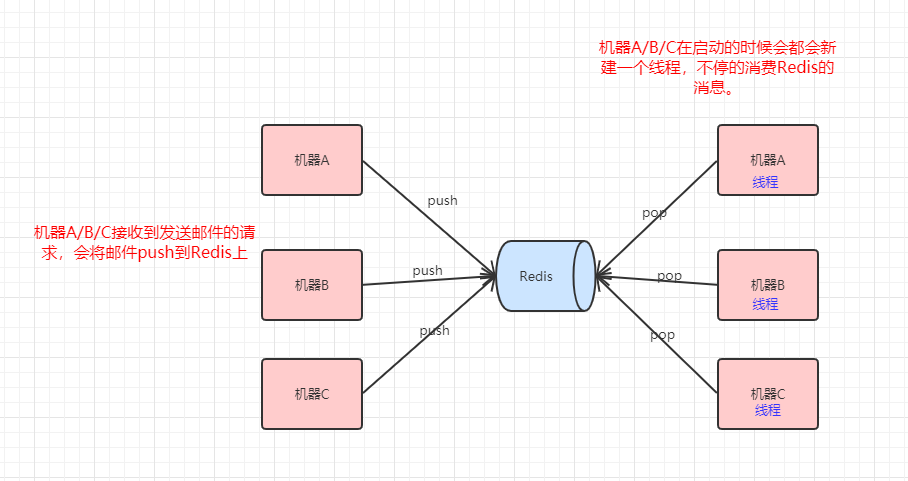
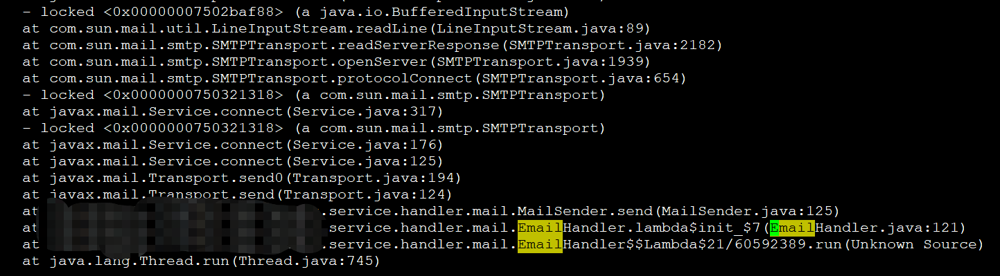
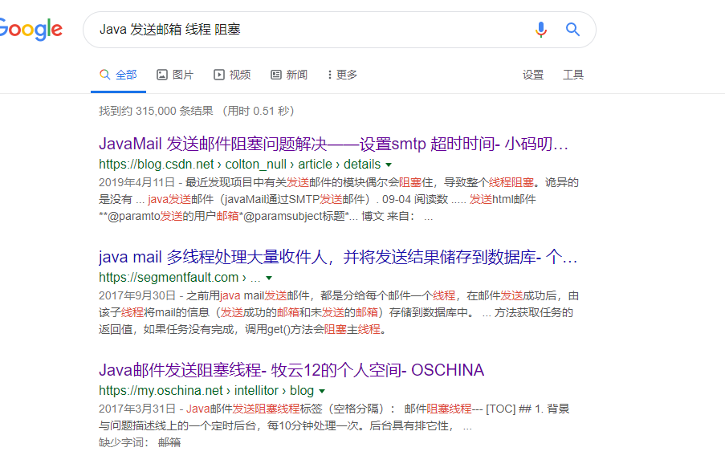

原文连接:https://www.cnblogs.com/Java3y/p/11471036.html
前言
只有光头才能变强。
文本已收录至我的GitHub仓库，欢迎Star：https://github.com/ZhongFuCheng3y/3y
在线上遇到了一个发送邮件的问题，记录一下。
一、先说背景
某一天，小王跟我反馈：“麻烦检查一下线上邮件的发送情况，我这查出来发送失败啦”
我去DB查了一下近期的邮件发送情况，表示：“看着都挺正常的，线上没有异常的情况。可能邮件在redis里边堆积了，还没消费”
select * from email order by id desc limit 100先来说一下我这边发邮件的大致实现方式：

这样做有什么好处？把Redis当做一个消息队列，把请求全部扔到Redis上，这能削峰。机器A/B/C的线程会在一定的间隔内向Redis拉取消息，然后调用邮件接口进行发送。
而我这边会在页面上提供一个功能给业务方查询各类消息是否发送成功，由于发送邮件是一个异步的操作，而前同事在编写的时候又追求实时性。
- 目前的逻辑是：如果push到Redis是成功的，并且Redis里边没有堆积着消息(说明机器A/B/C能及时处理掉这封邮件)，那就认为这封邮件发送成功。
PS：(如果系统不存在问题，其实这个实现也是OK的。因为邮件的发送量一般不会太大(Redis不会堆积消息)，并且发送邮件的成功率也是挺高的。
回到问题上，由于有上面的一个背景，所以我就猜测：是不是小王在查结果时，这封邮件还堆积在Redis上，所以就直接返回失败了。果不其然，我去查了一下Redis，还有200封邮件没消息。
于是我就问小王：“你这发了多少封邮件啊？”小王表示：“20分钟500封，1qps都不到”。我想了一下：“那我们这有四台机器，按道理是不会堆积那么多的”。
于是跑去线上服务器看一下消费的日志，发现只有一台机器在消费Redis的数据。又去看了一下错误的日志是不是有大量的错误信息，但并没找到错误的日志...
于是去查了一下机器的监控信息，也没发现异样。那问题就来了：为啥就只有一台机器在消费Redis的消息呢？其他三台机器的日志和监控信息都没异常。
二、解决
从日志和机器的信息都判断不出有什么问题，这时我又想起在Java中的一个命令：jstack
jstack命令主要用来查看Java线程的调用堆栈的，可以用来分析线程问题（如死锁）。
jstack详细用法以及教程：https://www.cnblogs.com/kongzhongqijing/articles/3630264.html
于是我就去执行了一下jstack命令，在信息中搜了一下"Email"，真被我搜出来了：

那就好办了，只要搜一下：“Java 发送邮箱 线程 阻塞”此类的关键字，应该就有解决方案了。

最后，发现是因为在发送邮件的时候没有配置超时时间，导致某些线程在发送邮件的时候阻塞掉了（具体原因不明）
- mail.smtp.connectiontimeout：连接时间限制，单位毫秒。是关于与邮件服务器建立连接的时间长短的。默认是无限制。
- mail.smtp.timeout：邮件接收时间限制，单位毫秒。这个是有关邮件接收时间长短。默认是无限制。
- mail.smtp.writetimeout：邮件发送时间限制，单位毫秒。有关发送邮件时内容上传的时间长短。默认同样是无限制。
最后
乐于输出干货的Java技术公众号：Java3y。公众号内有200多篇原创技术文章、海量视频资源、精美脑图，关注即可获取！

觉得我的文章写得不错，点赞！